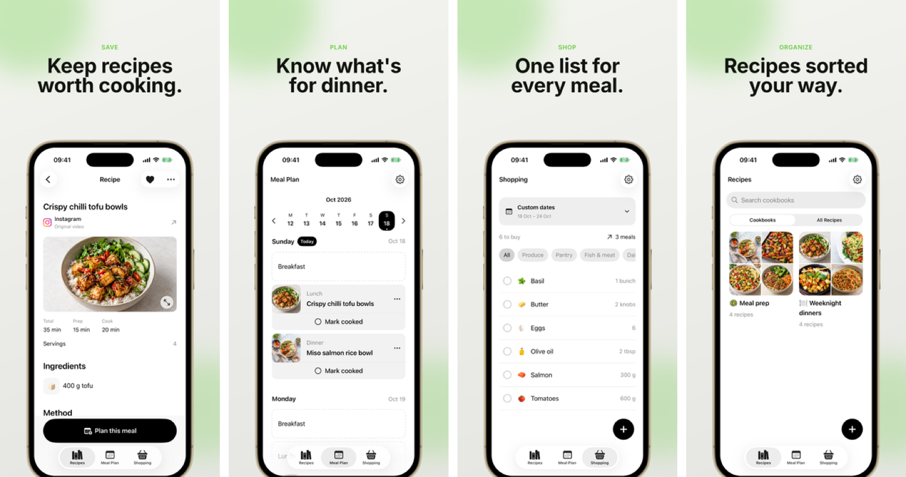
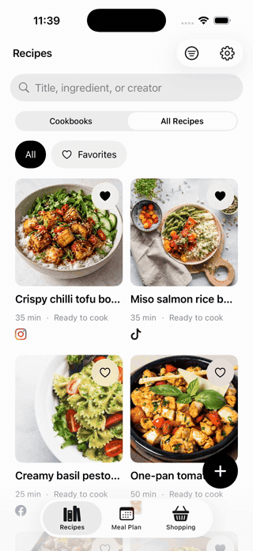
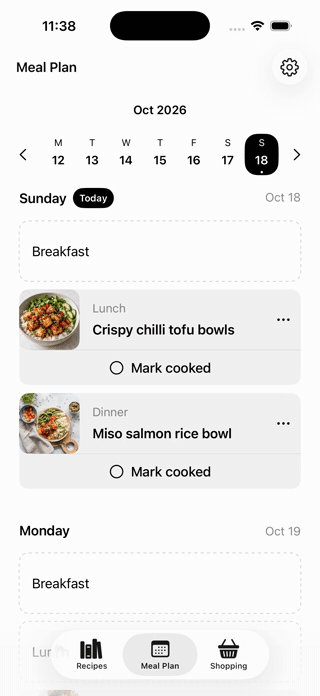
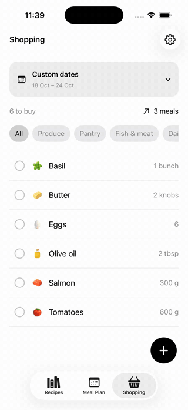
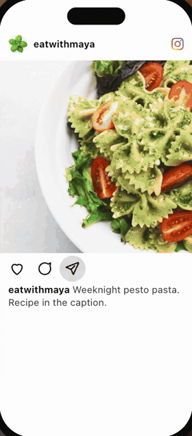

The problem
Deciding what to eat is a small problem that returns every day. I traced it to two causes:
- No idea. You don't know what to eat.
- No ingredients. You know, but what you need isn't at home.
A useful product has to handle both, so Piiman connects three steps that are usually in separate apps.



Three decisions
- Build for one real user first. There are many recipe apps. I built one I could fit to my own cooking, on the bet that a tool I use daily will suit other people too.
- Treat AI accuracy as the product. Recipes are imported with AI, and a wrong ingredient is only discovered at the stove. The import follows two rules: nothing invented, nothing left out.
- Spend a little on delight. A home screen widget shows tonight's dinner. When nothing is planned, the mascot dances instead.

No ingredient may appear that isn't in the original recipe.
Everything the source does say should make it into the recipe.


The widget is built and in testing. It is not in the App Store version yet.
How it was built
I built Piiman alone, working with AI coding agents for testing, App Store screenshots, animation and the pre-submission audit. The app is native SwiftUI, with a Next.js API on Vercel and a Supabase database. I asked for an audit against Apple's guidelines before submitting, and the app passed review on the first attempt.
Where it stands
Piiman went live on 11 November 2026. The goal is 100 customers in the first 90 days, about one a day. Let's see how it goes.
in the first 90 days
That's just 1 customer a day